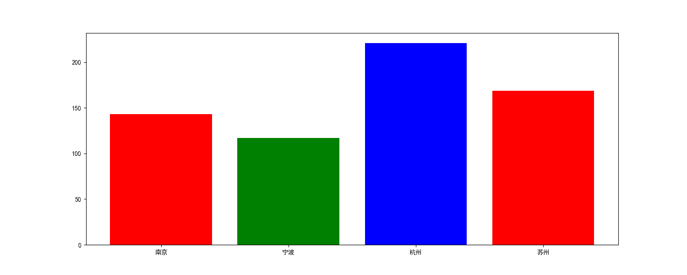
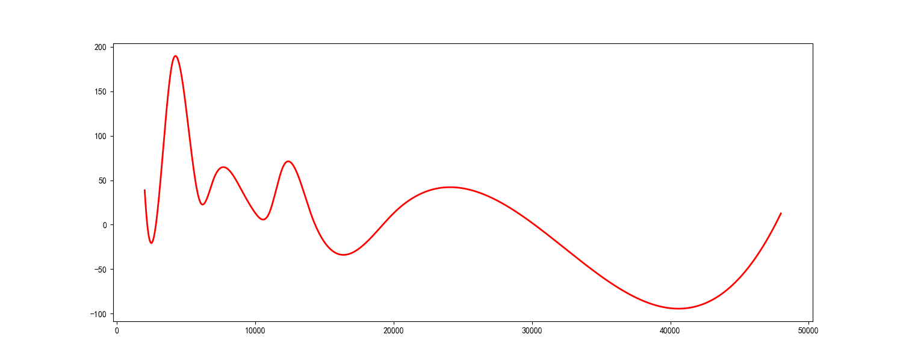

地区选择
热门城市
北京
上海
广州
深圳
武汉
西安
杭州
南京
成都
重庆
A B C
D E F
G H
J K L
M N P
Q R S
T W X
Y Z
鞍山
安庆
安阳
北京
包头
保定
蚌埠
宝鸡
滨州
长春
长沙
成都
重庆
常州
常德
常熟
沧州
潮州
郴州
赤峰
滁州
长治
大连
东莞
丹东
大庆
达州
大同
德阳
德州
东营
鄂尔多斯
鄂州
福州
佛山
抚顺
抚州
阜阳
广州
贵阳
赣州
广安
广元
贵港
桂林
哈尔滨
杭州
合肥
海口
呼和浩特
惠州
衡阳
淮安
湖州
邯郸
汉中
河源
菏泽
衡水
怀化
淮北
淮南
黄冈
黄石
济南
嘉兴
金华
吉林
江门
荆州
济宁
九江
吉安
焦作
揭阳
锦州
晋中
荆门
昆明
昆山
开封
兰州
廊坊
临沂
洛阳
连云港
柳州
乐山
聊城
临汾
六安
娄底
泸州
漯河
绵阳
马鞍山
茂名
眉山
梅州
南京
宁波
南昌
南通
南宁
南充
南阳
内江
宁德
平顶山
莆田
濮阳
青岛
泉州
秦皇岛
清远
齐齐哈尔
衢州
曲靖
日照
上海
深圳
沈阳
石家庄
苏州
三亚
绍兴
汕头
汕尾
商丘
上饶
韶关
邵阳
十堰
随州
遂宁
宿迁
宿州
天津
太原
台州
唐山
泰州
铁岭
泰安
武汉
无锡
温州
乌鲁木齐
芜湖
潍坊
威海
渭南
西安
厦门
徐州
襄阳
湘潭
咸阳
西宁
咸宁
孝感
新乡
信阳
邢台
许昌
宣城
烟台
扬州
宜昌
盐城
义乌
营口
银川
阳江
宜宾
宜春
益阳
永州
玉林
岳阳
运城
漳州
郑州
中山
珠海
镇江
株洲
湛江
肇庆
张家港
淄博
枣庄
张家口
周口
驻马店
遵义
招聘系统数据分析平台 V1.0
[ 选择城市 ]
全文
公司
立 即 分 析
地点分布

薪资分布曲线

词云